分析、AI 与时间序列
第二周从变量关系出发，进入多变量探索、模型表现诊断与时序结构分解。重点不是多画图，而是用图验证假设、发现失败模式，并为预测问题建立可靠的观察框架。
必须掌握的术语
| 术语 | 准确理解 |
|---|---|
| EDA | Exploratory Data Analysis：以图形为主的迭代探索，用于发现模式、异常与值得验证的问题。 |
| correlation coefficient | 描述两个变量共同变化方向与线性强度的数值；Pearson 相关系数范围为 -1 到 +1。 |
| univariate / bivariate / multivariate | 分别分析一个、两个、三个及以上变量；变量数增加后，图表需要承担更多筛选与编码工作。 |
| parallel coordinates plot | 平行坐标图：每条竖轴是一项数值特征，一条折线代表一个观测值，用于观察多变量关系与类别分离。 |
| ROC / precision-recall curve | 二分类模型在不同阈值下的表现曲线；ROC 强调 TPR 与 FPR，不平衡数据还需看 Precision-Recall。 |
| learning curve | 把训练量或迭代过程与模型表现放在同一张图中，用来诊断欠拟合、过拟合或数据不足。 |
| trend / seasonality / residual | 时序的长期变化、周期重复模式及去除两者后剩余的不可解释波动。 |
核心知识
2.1 Correlation Analysis｜先看图，再检验假设
本章图表：散点图、相关矩阵 / 热力图、多变量小提琴图。它们分别用于双变量关系、成对相关性和按类别比较多组分布。
EDA 的循环是：提出问题、构造恰当的可视化、检查结果，再提出下一轮问题。统计量能概括数据，却不能替代图形检查；相似的均值、标准差与相关系数可能隐藏完全不同的结构。
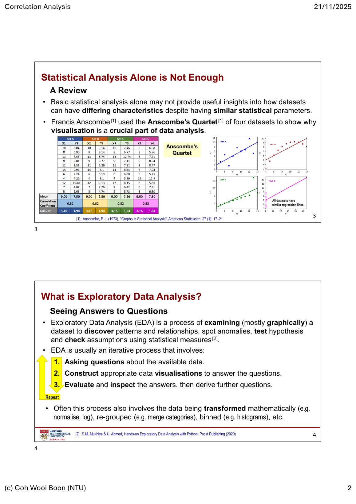
相关不等于因果。相关性只能提示变量共同变化；混杂变量、反向因果或抽样偏差都可能制造相关。视觉发现用于生成假设，显著性检验和领域证据才用于评估假设。
corr = df.select_dtypes("number").corr(method="pearson")
sns.heatmap(corr, vmin=-1, vmax=1, center=0, cmap="vlag", annot=True)
# 先检查形状、异常点与分组，再讨论数值相关
sns.scatterplot(data=df, x="engine_size", y="price", hue="fuel_type")
2.2 Visualisation for AI｜让模型过程可被诊断
本章图表：排序 count plot、散点图、平行坐标图、混淆矩阵、ROC、Precision-Recall 与 learning curve。它们覆盖数据分布、特征关系、类别错误和训练过程。
训练模型前，先用排序柱状图检查类别数量与不平衡；用带 hue 的散点图观察特征能否分开类别。面对多个数值特征时，平行坐标图把每个样本画成穿过多根轴的折线，适合寻找分组、异常与潜在特征组合。
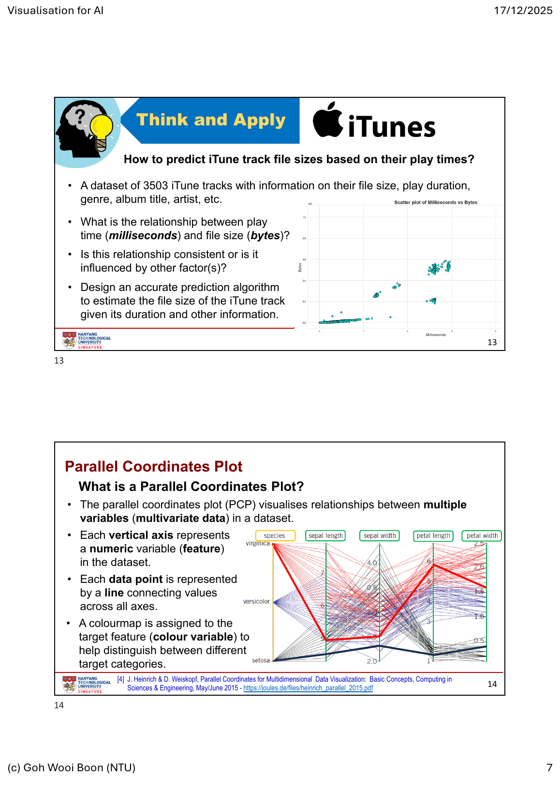
模型图不是分数的装饰。混淆矩阵定位错在何种类别；ROC 和 Precision-Recall 检查阈值取舍；学习曲线查看训练集与验证集是否仍有差距。报告时必须说明正类定义、数据切分和评价指标。
2.3 Time Series Analysis｜把变化拆成可解释的部分
本章图表：时间折线图、按年份着色的季节折线图、季节箱线图、分解图。它们分别用于总体演变、跨季节比较、季节内离散程度和趋势/季节性/残差诊断。
时间序列按时间先后排列，顺序本身就是信息。清洗时先把日期转为日期类型，并从中生成年份、月份等字段；可用年份着色的折线图比较同一季节在不同年份的变化。
data["Date"] = pd.to_datetime(data["Date"])
data["Year"] = data["Date"].dt.year
data["Month"] = data["Date"].dt.strftime("%b")
sns.lineplot(data=data, x="Month", y="#Passengers", hue="Year", palette="tab10")
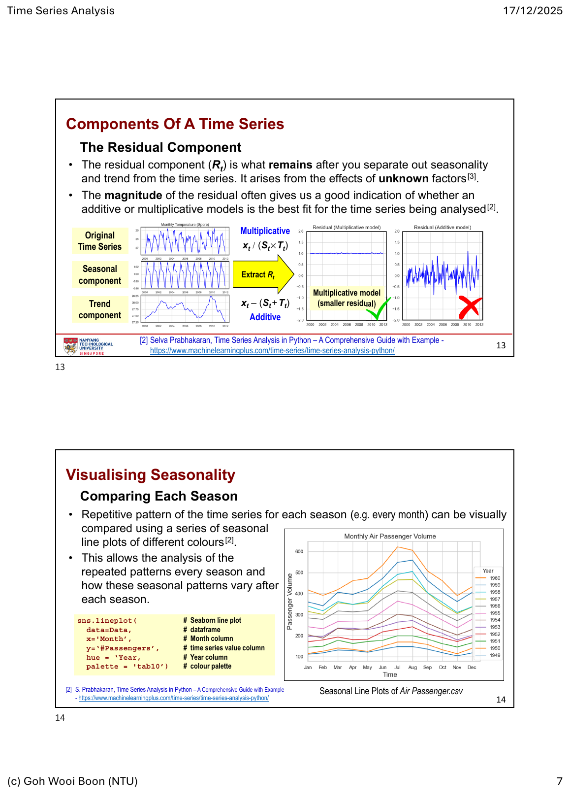
分解后仍有明显结构的残差，说明模型遗漏了信息。不要随机打乱时序数据来验证预测模型；训练集必须早于验证集，避免未来信息泄漏给过去。
第二周 Tutorial｜从探索到解释与预测
Tutorial 工作流：每个案例都先检查缺失值与变量类型，再用图发现模式；只有在需要作比较或声明差异时，才选择合适的统计检验或模型评估。最终输出必须写清楚数据、图表、判断和限制。
Mid-week #2 · Explore and Confirm｜Automobile.csv 与 Titanic.csv
Automobile.csv：先统计每列的 NaN，决定删除、填补或在对应分析中排除；再用相关热力图找与价格正、负相关最强的数值特征。比较前驱和后驱的油耗时，先画按 drive-wheels 分组的 pairplot / facet plot，再以 Shapiro-Wilk 检查分布；根据结果选择 t-test、Z-test 或 Mann-Whitney U，而不是由图形直接宣称显著。
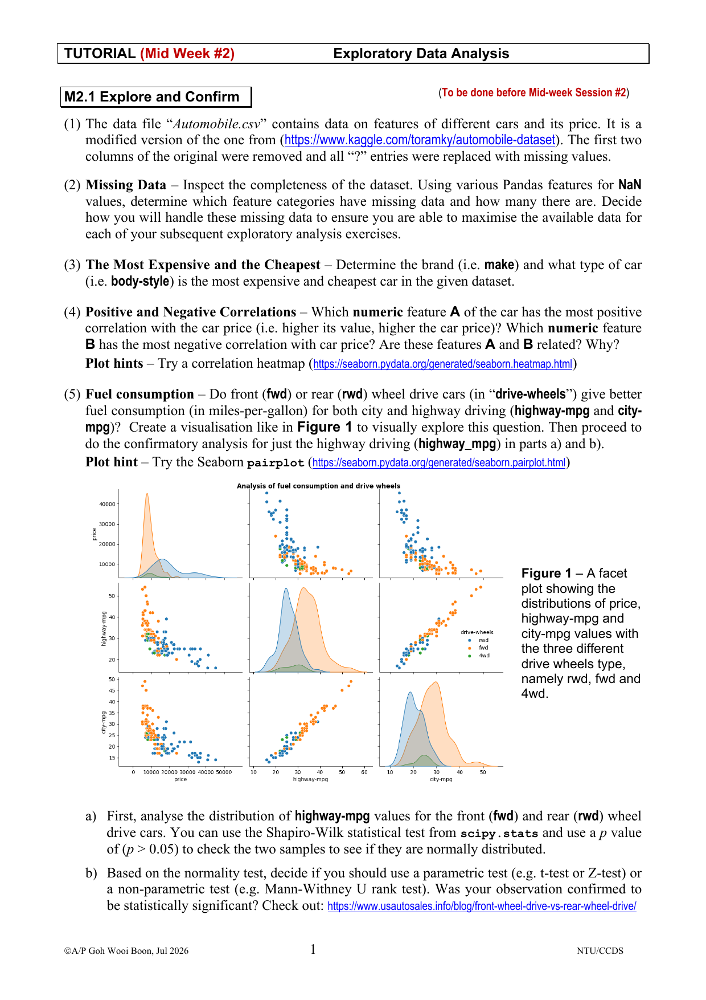
继续以 body style、车门数量、马力与城市油耗为问题：三组 body style 的比较需要先判断分布并选择适合多组比较的检验；车门 × body style × price 适合用小提琴图显示分布与离散程度。无监督部分则以 price × engine-size 做 K-means：用 elbow curve 选择候选 K，在散点图上按 cluster 着色并标出 centroid，再解释各簇的均价和价格变异，而非只报告算法输出。
Titanic.csv：这是“Explore and Explain”练习。用 missingno 先展示缺失模式，再围绕登船地、性别、票价/舱等、家庭同行与儿童等叙事问题选图。结论应写成有证据的故事：哪一组的生还率更高、图表是否显示交互作用，以及哪些缺失值或样本量限制了结论。
Saturday #2 · Explore and Predict｜iTunes、Cars 与 Singapore Temperature
iTunes：先用排序并标注数值的 count plot 找出最多的六个 genre，再用 Bytes × Milliseconds 散点图，并以 genre 等变量着色，检查时长与文件大小关系是否因类别而变化。回归练习固定保留 20% 测试集；要说明输入特征的尺度、非数值值如何处理、模型选择原因，以及测试集 R²。最后用实际值 × 预测值的图检查预测误差是否存在系统偏差。
Cars：用可交互的 Plotly 平行坐标图探索品牌、年份、mpg、cylinders、hp、weight 等多变量关系；通过 brushing 和轴重排找出模式，再用 Seaborn regplot 与相关热力图验证。分类任务同样保留 20% 测试集，并比较移除低/高重要性特征后的 accuracy、ROC、Precision-Recall 和 learning curve；KDE 用于解释哪些特征分布重叠，因此为什么类别难以分开。
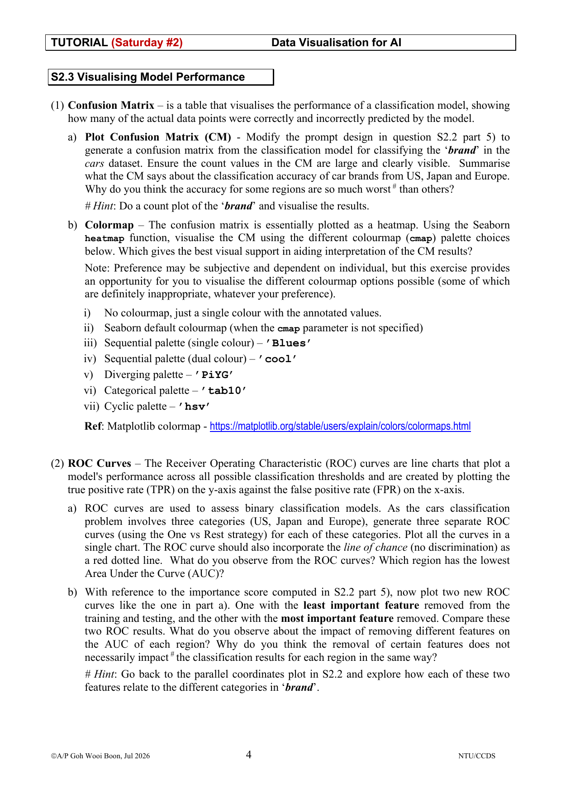
Singapore Temperature：1982–2021 的月均气温用于完整时序分析：画总体折线，再按月份配色以找重复模式与异常；以季节箱线图比较最热、最冷与变异最大的月份；最后做时序分解，判断加性或乘性结构，并对 trend 使用 linear regression 或 LOWESS。任何关于升温趋势的结论都必须回到 trend component，并说明周期波动与异常月份。
Tutorial S2.1 Explore and Predict｜iTunes 回归
原题截图：下图保留 S2.1 的全部任务：缺失值检查、top-6 genre 排序柱状图、Bytes × Milliseconds 分层散点图、20% 测试集回归，以及实际值与预测值比较。
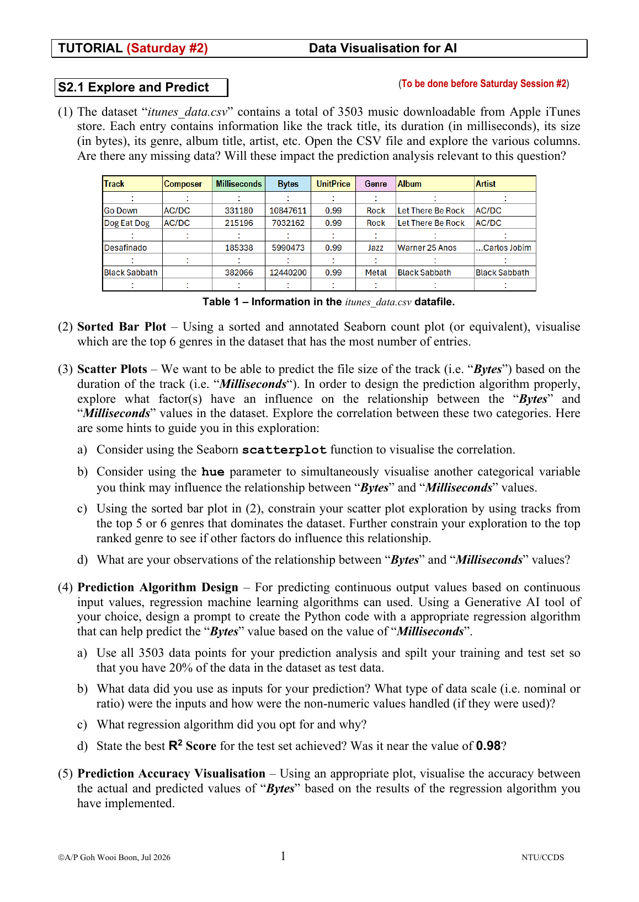
逐题解析：先用 info() 与 isna().sum() 判断缺失是否落在目标或输入列；genre 用从大到小且标注 count 的横向柱状图；散点图依次画全量、主导 genre、第一 genre，并以 hue 检查分组斜率。回归至少给出 Milliseconds 的线性基线，固定 20% 测试集与随机种子；若加入 nominal 特征，必须在训练 pipeline 中 one-hot encode。最终用 actual-vs-predicted scatter 加 y=x 线，并用 residual 图检查系统误差；R² 只报告测试集。
Tutorial S2.2 Parallel Coordinates Plot｜Cars 多变量探索与分类
原题截图：S2.2 分两页，要求使用 Plotly PCP 的 brushing 与轴重排，随后以 regplot、heatmap、KDE 和分类模型作验证。
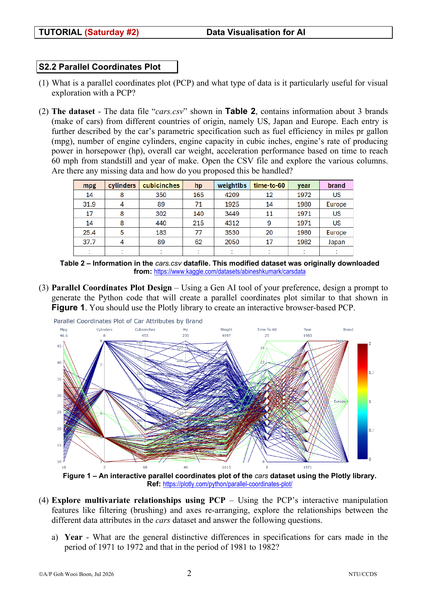
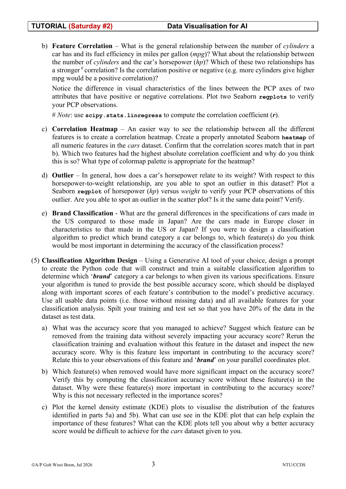
逐题解析：PCP 适合多个数值特征，每条线是一辆车；先处理缺失、明确 brand 只作为颜色/目标。观察 cylinders–mpg、cylinders–hp 时，以线束的平行或交叉提出假设，再用 regplot 和 linregress 验证方向与 r；数值热力图用以 0 为中心的发散色盘。可疑 hp–weight 异常必须在 scatter 中核对是否同一行。分类模型采用分层 80/20 切分；比较移除低/高重要特征后的测试表现，并以 KDE 的类别重叠解释为什么某些特征难以分开品牌。feature importance 不是因果，也可能被共线特征稀释。
Tutorial S2.3 Visualising Model Performance｜模型诊断
原题截图：S2.3 逐步要求混淆矩阵、One-vs-Rest ROC、Precision-Recall 和 learning curve，并比较移除不同特征的影响。
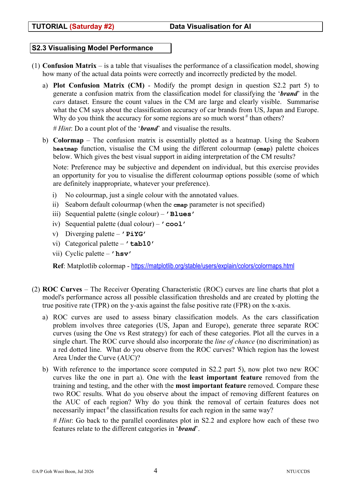
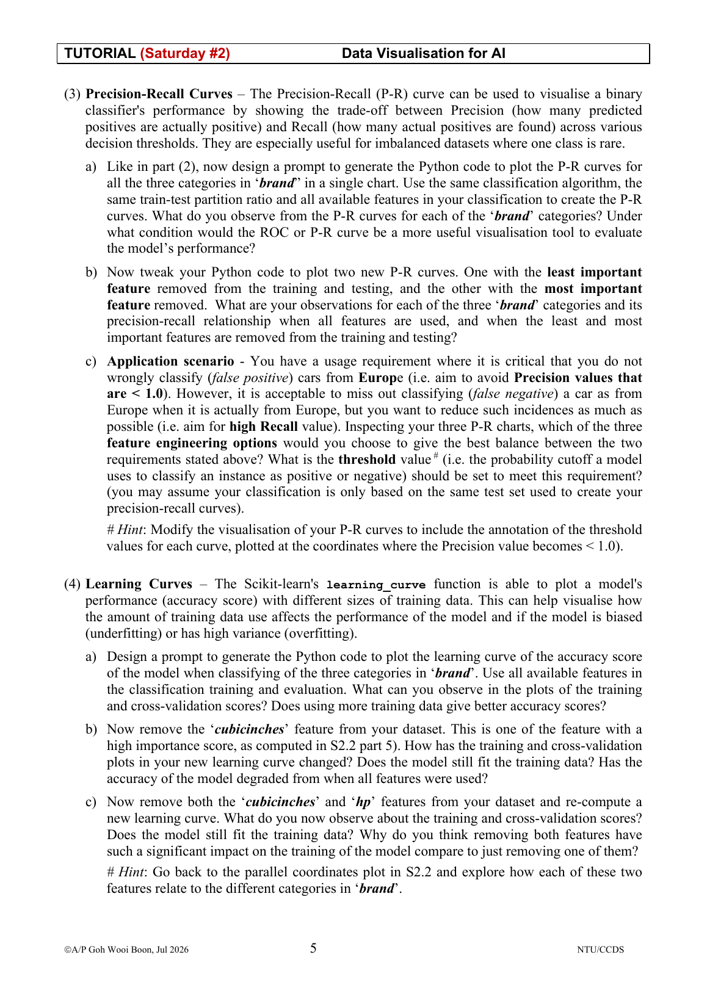
逐题解析：混淆矩阵必须标明 actual / predicted，并报告每类 recall、precision、support；连续计数适合 sequential 色盘，不适合 tab10 或 hsv。ROC 将 US、Japan、Europe 分别视为正类，以概率输出绘制三条曲线和 AUC，对照机会线。PR 曲线在 false positive 成本高或类别不平衡时更有解释力；Europe 的 precision 必须保持 1 时，在满足条件的阈值中选 recall 最大者，若测试集无解应如实写出。learning curve 比较训练与交叉验证曲线：高训练、低验证提示高方差；两者均低提示欠拟合。所有特征移除比较必须复用相同切分与评价标准。
Tutorial S2.4 Climate Change and Singapore｜时序报告
原题截图：最后一题要求用 1982–2021 新加坡月均气温识别异常、季节性和趋势，并比较加性/乘性分解及 linear regression / LOWESS。
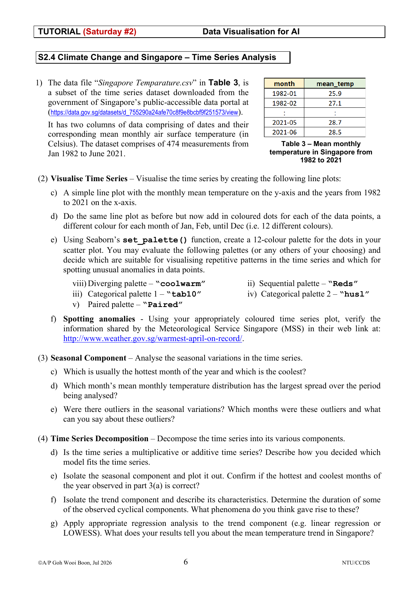
逐题解析：将日期解析、排序并检查月度连续性后，画总体折线和按月份配色的点；月份为名义类别，优先用 tab10/husl 等类别色盘，避免以顺序色盘表示月份。用月度 boxplot / violin plot 判断通常最热、最冷和变异最大的月份，区分分布中心与单次极值。以 seasonal_decompose(..., period=12) 分解；若季节波动幅度近似恒定，优先 additive，若随整体水平成比例扩大才考虑 multiplicative。趋势回归在 trend component 上进行：linear regression 说明平均线性变化，LOWESS 检查非线性；不能把单月异常或统计趋势直接写成单一气候成因。
常见错误
- 看到高相关就宣称因果，或只看系数不检查散点结构与异常点。
- 用 ROC 单独评价高度不平衡的分类任务，却不看 Precision-Recall、类别数量和错误成本。
- 在平行坐标图放入没有标准化的特征，导致量纲大的变量支配阅读。
- 把时序数据随机切分，或在预处理时使用验证期之后的信息。
- 把趋势、季节性和短期噪声混为一谈，直接对原始曲线下预测结论。
练习
检查缺失值；用 heatmap 找出与 price 正、负相关最强的两个特征；为 fwd / rwd 的
highway-mpg 画分组图、进行正态性检查，并说明你选择的统计检验与结论边界。使用 Titanic 数据，围绕“性别、舱等与票价是否与生还有关”提出一个叙事。至少使用三张互补图，并写出一个不能由图表单独证明的因果限制。
以
Milliseconds 预测 Bytes，保留 20% 测试集。用 genre 分层的散点图解释特征选择，再用实际值 × 预测值图和 R² 评估模型。先用平行坐标图与热力图提出特征假设；训练品牌分类模型后，给出混淆矩阵、One-vs-Rest ROC、Precision-Recall、learning curve。移除一项特征并比较变化。
画月度总折线、按月份着色的时间图、季节箱线图和分解图；判断加性/乘性结构，以 regression 或 LOWESS 说明 trend，并保留对异常与周期的解释限制。